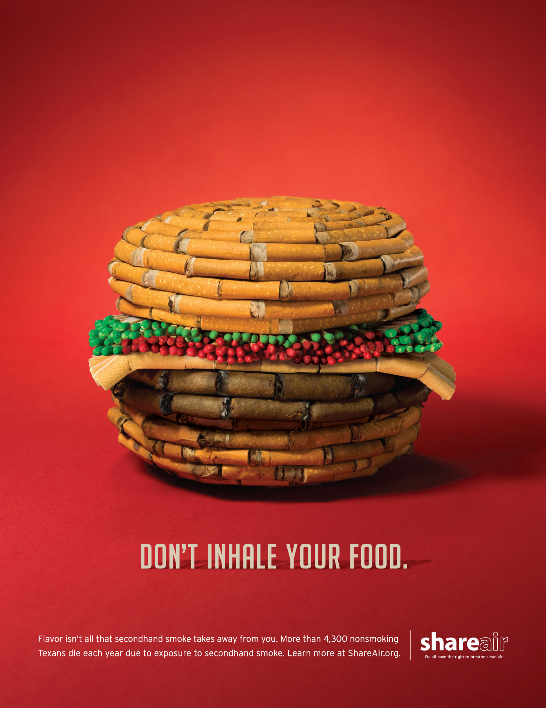
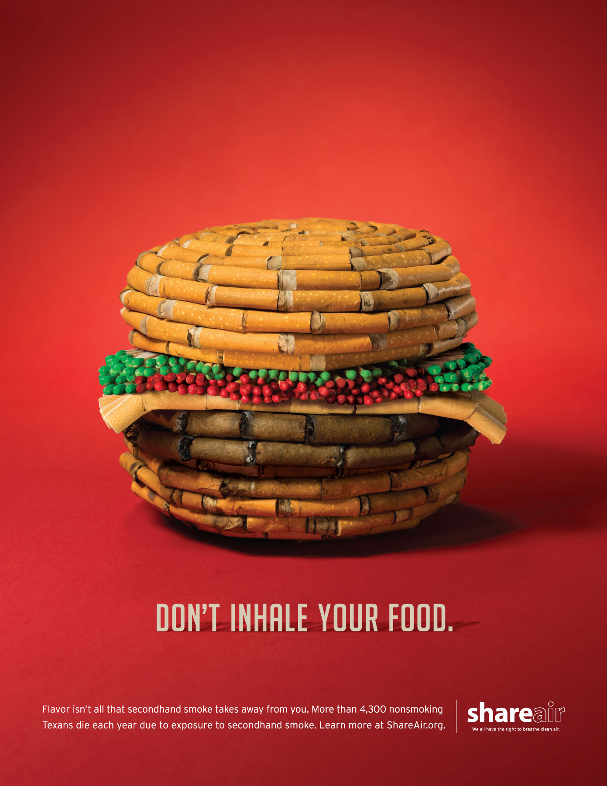

Incident News
CIDG:
Cases of missing sabungeros now at 8

Cases of missing sabungeros now at 8

|
|
|
Other Stories Fear among witnesses a challenge in PNP probe of missing sabungeros CIDG to file complaint vs 8 suspects in missing sabungeros case on Friday Drilon: Gov’t should look at e-sabong’s effect on Filipinos’ moral fiber |
|
“To ensure an airtight case for the prosecution of the suspects,
the PNP legal officers and CIDG investigators thoroughly reviewed the sworn statements of the witnesses and other pieces of evidence,
last March 18, 2022,” Cruz said. “A case of kidnapping and serious illegal detention punishable under Article 268 of the Revised Penal Code was filed against the identified eight suspects and other John Does before the Department of Justice,”
he added. Last week, Interior Secretary Eduardo Año said a total of eight suspects in the disappearance of cockfight enthusiasts have been identified by the PNP.
— RSJ, GMA News
|
|
Other News
|
|
Akbayan urges Comelec to release
decision on cases vs. Marcos Jr.’s prexy bid Published March 21, 2022 12:31pm
|
|
CIDG:
Protests won’t bring down gas prices,
Duterte tells PUV drivers Published INQINQUIRER.net / 12:27 PM March 22, 2022
|